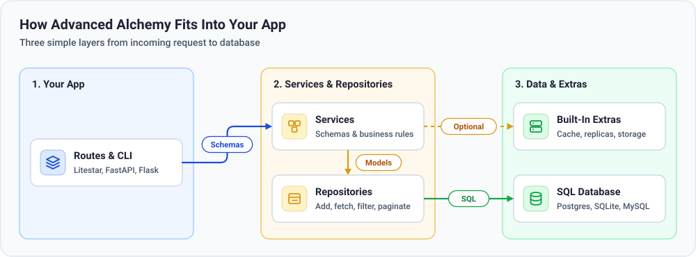
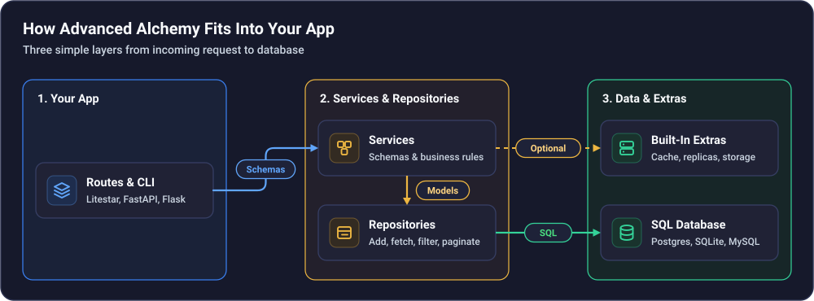

Usage Guide#
Imagine you are building a blog with Posts, Authors, and Tags. A reader opens your home page, asks for page 2 of published posts, and creates a comment.
Advanced Alchemy organizes that work into three clear steps so your route handlers stay tiny and easy to test:


Models describe what your tables look like in the database (such as a post’s title, author, and timestamps).
Repositories run SQL queries for one table—adding rows, filtering, sorting, and paginating without repeating query code.
Services sit in front of repositories to validate incoming API schemas (Pydantic or Msgspec) and enforce your app’s business rules.
Define tables with automatic UUID or integer primary keys, audit timestamps, JSON, encrypted columns, and file storage.
Add, fetch, filter, paginate, and bulk-upsert records using async or sync sessions.
Keep business rules in one place and convert database rows straight into Pydantic or Msgspec responses.
Connect your services to Litestar, FastAPI, Starlette, Flask, or Sanic with automatic session management.
Scaling and Day-Two Tools#
Once your core tables and routes are running, you can turn on operational features without rewriting your queries:
Replica Routing — Send writes to your primary database and spread reads across read replicas.
Caching — Cache frequent lookups in Redis or memory and clear stale entries automatically on commit.
CLI & Migrations — Generate and apply Alembic schema migrations from the terminal.
Database Seeding — Load starter data from JSON or CSV files.